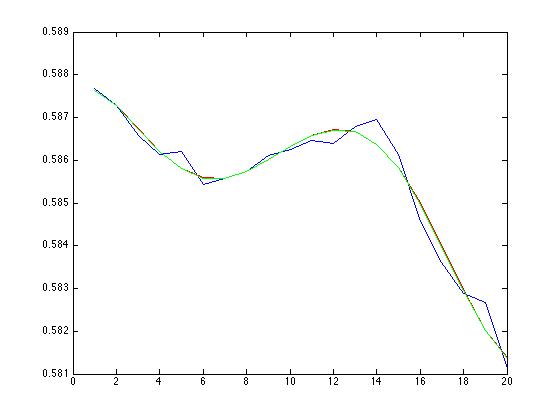
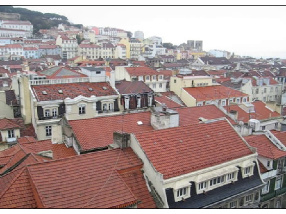

VideoLigthCorrector example
It is usual to have fast light changes in some video, which can cause problems in computer vision algorithms. In here we show an example which prevent this light changes by reducing the intensity differences between consecutive frames using a polynomial approach.
Contents
Create the VideoLightCorrector object
In order to create the object we have to define the number of degrees of the polynomial function.
degree = 6; % polynomial degree vp = VideoLightCorrector('./Resources/TestVideo.mp4', degree);
Reproduce the Video Sequence
After we have processed the video we are ready to reproduce it in the same way as a VideoPlayer object.
while (true) plot(vp); drawnow; if ( ~vp.nextFrame ) break; end end
Release the VideoLightCorrector
Finally it is necessary to release the object.
clear vp;